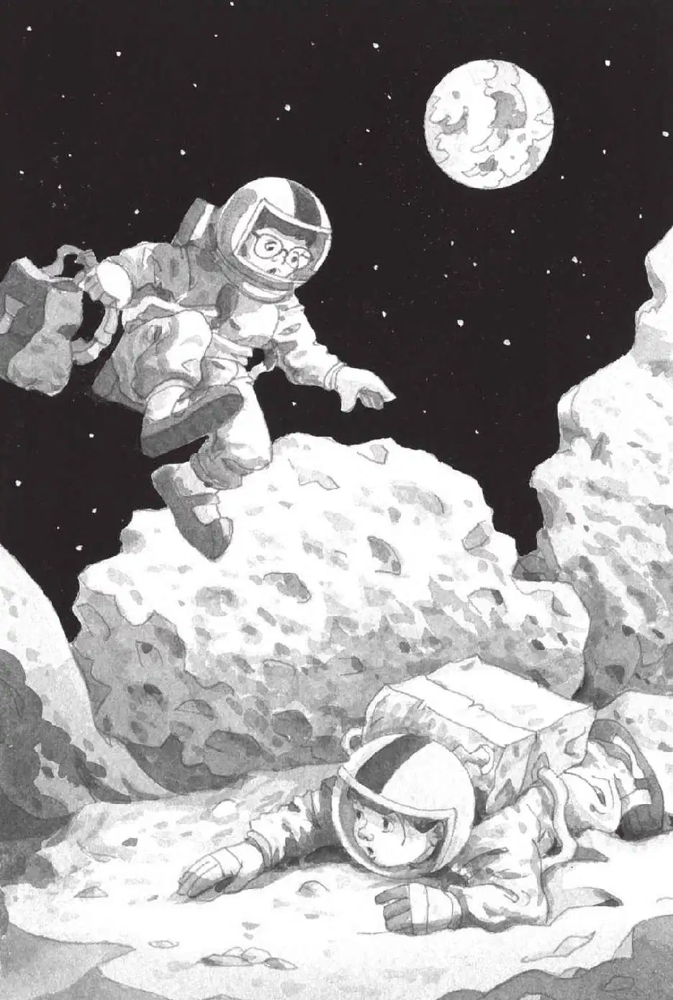

“那是谁？”杰克问。
“不知道，但我们很快就会弄清楚的！”安妮说着就开始招手。
“别！”杰克一把抓住安妮的胳膊，“趁他还没有过来，我们快回月球基地吧！”
“为什么？”安妮不解地问。
“我们根本不知道他是谁！”杰克说，“也不知道他是好人还是坏人。”
“可是我们不能回去，”安妮说，“第四样东西还没找到呢。”
“没关系，我们可以先把月球基地的门锁上，等他走了再说。”杰克说，“到时候我们可以弄到新的储气罐。”
杰克匆匆地走向月球探险车。“快来啊！”他纵身跳上了驾驶座。
安妮朝天空中的那个小点儿挥了挥手，然后也钻进了月球探险车。月球探险车开动了。
“当心！”安妮喊道。
杰克让月球探险车掉了个头，他们在乱石间剧烈地颠簸，然后朝着山间的那个豁口冲过去。
杰克开车绕过一个个火山口和一块块巨石。月球探险车不止一次差点儿翻倒。
“哎呀！慢一点儿！”安妮喊道。
山间的那个豁口眼看就要到了。突然，他们面前腾起一团尘雾。地面在颤抖。
“当心！”安妮大叫。
杰克什么也看不见了。
他踩住刹车，月球探险车颠簸着停了下来。
尘埃落地。一块巨石落进了那个狭窄的豁口，卡在两道峭壁之间。他们被困住了！
杰克翻开月球书，迅速找到一幅巨石的图片。他大声念道：
大大小小的石头从外太空落到月球上。这些石头被称为陨石。
“幸好那块陨石没有落到我们身上。”杰克说。
“是啊，它那么大，肯定不是第四样东西。”安妮说。她钻出月球探险车，站在那块陨石旁边。
陨石比她高一倍都不止。
杰克看着黑压压的天空。那个飞行物暂时还不见踪影。
“我们必须从石头上跳过去！”安妮说。
“跳过去？不太可能吧？”杰克说，“石头太高了。”
“反正我要试一试。”安妮坚决地说。
“等等。我们先想想清楚。”杰克迟疑地说。
可是安妮已经开始后退。
“一、二、三——跳！”安妮大喊一声，朝那块陨石跨出了几大步。
靠近陨石时，安妮双脚腾空而起。她高高地跃到空中，落在陨石后面不见了。
“安妮！”杰克大声叫道。
没有回音。
“哦，见鬼。”杰克也后退几步，朝陨石冲了过去。他高高地跳起，然后腾空飞了起来。
杰克落在地上，脸朝下埋在了尘土里。
杰克想站起来，可是他的宇航服太臃肿了。他想翻个身，然而穿着宇航服，连翻身都不可能。
“哦，糟糕，”他暗暗叫苦，“不会这么倒霉吧！”
“你在吗？”安妮问道，“你也跳过来了？”
“是啊！”听到安妮的声音，杰克松了口气说。可是他没法转过头去看她，只能通过对讲机听见她的说话声。
“你能扶我起来吗？”杰克问道。
“不能。”安妮回答。
“为什么？”杰克问道。
“我也倒在地上呢。”安妮说。
“哦，见鬼。”杰克叹着气说，“现在我们真的遇到麻烦了。”
他又试着想站起来，但再一次失败了。
“你能看见什么吗？”杰克问道。
“只有天空。”安妮回答，“哇，真奇怪……”

“我担心我们储气罐里的氧气不多了，”杰克说，“我感觉两个小时已经过去了。”
“杰克……”安妮说。
“那个月球人怎么样了？”杰克问，“他上哪儿去了？”
“杰克！”安妮低声叫道。
“怎么了？”杰克问。
“他在这儿，”安妮说，“月球人就在这儿。”
“什么？”杰克惊诧道。
“他就站在我旁边。”安妮说。